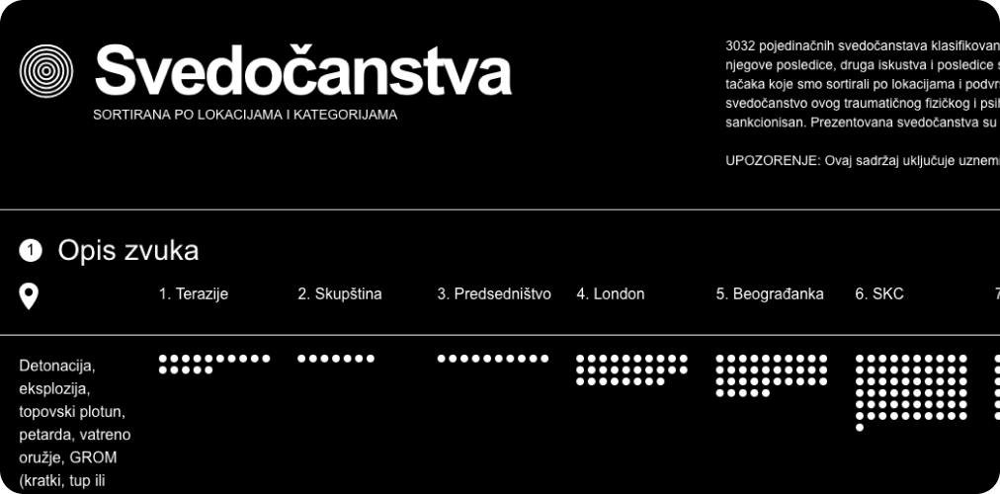
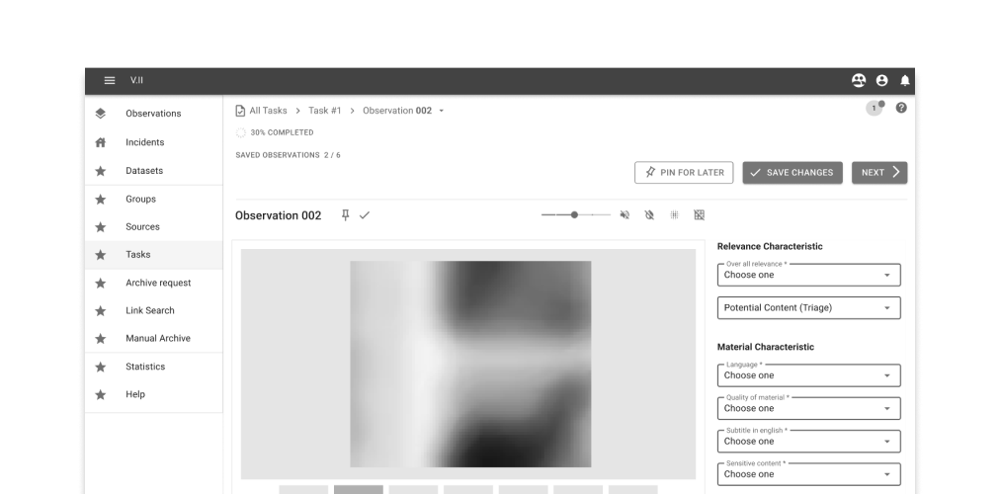
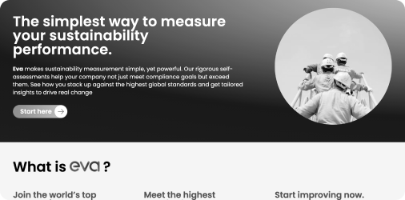
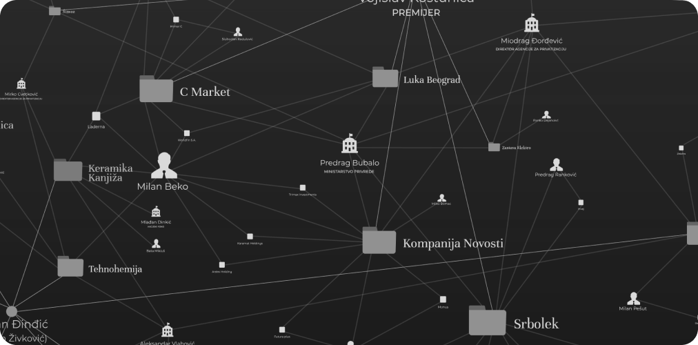
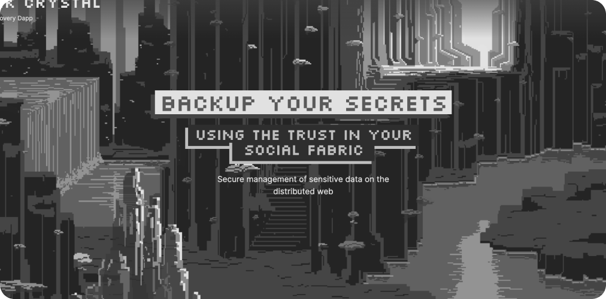

Transforming complexity into compelling design experiences
We partner with investigative journalists, human rights organizations, and research institutions to transform complex investigations into clear, compelling stories—with the domain knowledge, technical capability, and ethical awareness this work demands.
Data Interfaces for Justice

UI & UX for research
Building interfaces and digital experiences that provide human-centered access to complex data.

Digital Product Development
Build complete digital products from concept to launch, handling design, and development.

Data Visualization & Storytelling
Transform investigative stories into accessible, interactive narratives.

Discovery & Branding
Guide organizations through brand identity and coherent visual solution for their concept or product.
